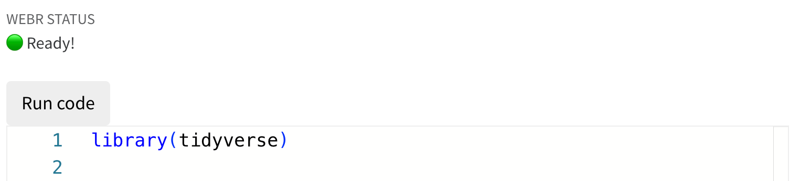

2 Jumping essentials
2.1 The essentials
Before you jumop into the water it can be of benefit when you know more about the water. What is the temperature? Is it really cold or just nice and warm? How high is the jump? Do you need to jump first 5 meters from a diving board or can you allready feel the water with your toes. This first chapter will give some basic programming essentials that will allow you to jump easier. Also it can be used as a reference for when you need to make the jump again
2.1.1 Find your info online and in documentation
R has so many functions that it is impossible to know everything by heart. So documentation of functions and the internet are always your best friend.
Stackexhange is an excellent resource. Almost 90 to 99% of your questions related to how you should use your R and tidy functions has been asked before by others. THe nice thing is that the active coding community put those questions with reproducible code in Stackexchange. More importantly, almost all questions has been accurately answered in multiple ways.
Other resources that come up more often in my search results are either forums on POSIT community, Reddit, or Github discussions or issues can also be usefull, but these are more forum-like comments, with not such a good solvability structure as stackexchange.
Then there are many more resources that somehow scrape the internet and collect basic info. Most of the time the info is correct but too simplistic. Not real issues are tackled. These are sites like geeksforgeeks, datanovia, towardsdatascience, some have better info then others, but most of the time these have commercial activities and in the end want to sell you courses or get your clicks.
2.1.2 R and tidyverse documentation
All functions in R and tidyverse are accurately documented. All its arguments are described and especially the examples that are given are really helpful. Packages have often even more documentation called vignettes that explain certatin topics and contexts on how and when to use the functions.
2.1.3 Style and layout
Writing your code benefits from proper readability. Just like we layout our texts, manuscripts and excel data files, we also need a good layout for our code.
There are mulitple ways to organize your code, I try to adhere to: - short lines (max 60 characters per line) - indent after first line - indent after ggplot - each next function call aligns with the above function - each argument aligns with the previous argument - each ggplot layer gets its own line - I put the x and y aesthetics for ggplot mapping on one line
Other good practices are: - use the package name before a function, like dplyr::mutate - use comments to annotate the code, when you put a # before it, it is not executed
So here is an example on what not to do and its corrections
2.2 Basic R semantics
When starting using R and tidyverse the new language can be daunting. So here is a short primer of common semantics that are often not directly understood from code.
I took some of these example directly or indirectly from:
2.2.1 Assignment
The most common way of assigning in R is the <- symbol. Although the = works in the same way, it is reserved by R users for other things. I tend to use it for assigning numbers to constants, and it is used in function arguments
2.2.2 Vectors and lists
A vector in R is a collectino of items (elements) of the same kind (types). A list is a collection of items to can also have different types. We make a vector with c() and a list with list. The c in c() apparently stands for combine link
Also, R forces that a vector is of one type. You can see that when you specifiy a vector with numbers and characters eg. c(1, 2, "1", "2). It forces the vector to be of character type.
Lists form the basis of all other data than vectors. Dataframes are collections of related data with rows and columns and unique columns names and row names (or row numbers). data.frame is actually a wrapper around the list method.Tibbles are the tidyverse equivalent of dataframes with some more handy properties over dataframes. A ‘list’ can have names items or not.
2.2.3 Common semantics
R language is different from other programming languages, and when starting out learning R there are some rules and common practices.
2.2.4 ~ (the “tilde”)
2.2.5 + (the plus)
Apart from the simple arithmetic addition + is also used in the ggplot functions. It adds the multiple layers to each ggplot
2.2.6 %>% (the pipe)
The %>% is used to forward an object to another function or expression. It was first introduced in the magrittr package and is now also introduced in base R as the |> pipe, which are now identical. See blogpost for more info.
2.2.7 == (equal to)
The == is the equal to operator. It is different than = which is used only for assignment.
2.2.8 aes (aesthetics in ggplot)
The aes is important for telling the ggplot what to plot. aes are the aesthetics of the plot that need to mapped to data. So the ggplot needs data and mappings.
The ggplot acronym is actually coming from the grammar of graphics, which is a book “The grammar of graphics” by Leland Wilkinson, and was used by Hadley Wickham to make the ggplot package in 2005.
A ggplot consists of: - data - aestehtic mappings (like x, y, shape, color etc) - geometric objects (like points, lines etc) - statistical transformations (stat_smooth) - scales - coordinate systems - themes and layouts - faceting
2.2.9 %in% (match operator)
This is handy to check and filter specific elements from a vector
2.3 Practical tips
2.3.1 Running your code
Webr code in the browser can be run as a complete code block by clicking on the Run code button when the webr status is Ready!, right above the block.

Another option is to select a line of code (or more lines) and press command or ctrl enter. This will execute only the line or lines that you have selected.
2.3.2 Simple troubleshooting your pipelines and ggplots
It happens that your code is not right away typed in perfectly, so you will get errors and warnings. It is good practice to break down your full code block or pipe into parts and observe after which line of code the code is not working properly.
2.3.3 Building your data visualisation step by step
Let’s take a built-in R dataset USArrests. We want to visualize how the relative number of murders in the state Massachusetts relates to the other states with the highest urban population in those state. In the dataset, the murder column represents the number of murders per 100.000 residents
Make a plot that addresses the above dataviz problem.
Hints:
Do the following in your coding:
glimpseat the data and look at the top5 rows usinghead()- use
tibble::rownames_to_column()to make a separate column calledstates - clean the column names using
janitor::clean_names() - turn the datatable into a
tibbleusing ‘as_tibble’ - take only the the top states by using a filter on the urban population (take it higher than 74)
- plot the data using a
geom_col - label the x axis and not the y-axis
- highlight the massachusetts column using a separate
geom_collayer, were you put a filter on the original data by using in thegeom_cola call to `data = . %>% filter(str_detect(states, “Mass)). Also give this bar a red color. - apply a nice theme so that there are only x axis grid lines and no lines for y and x axis.
- Also make sure that x-axis starts at zero
Include all these aspects step by step.